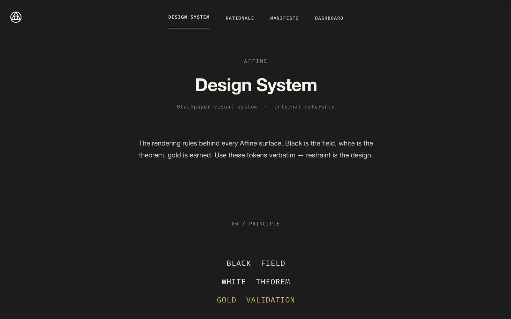
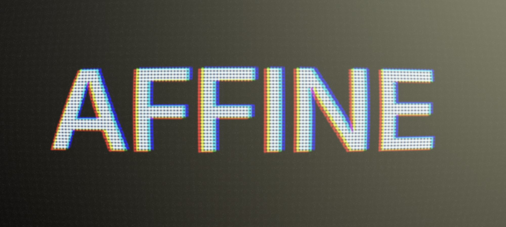
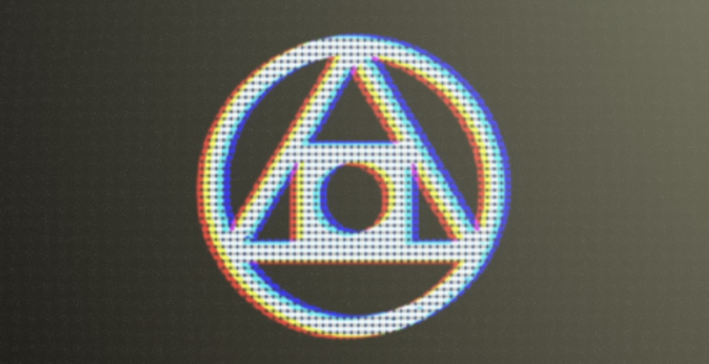
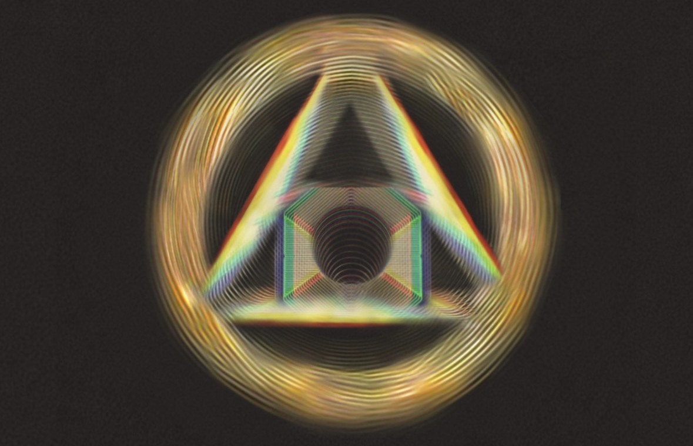
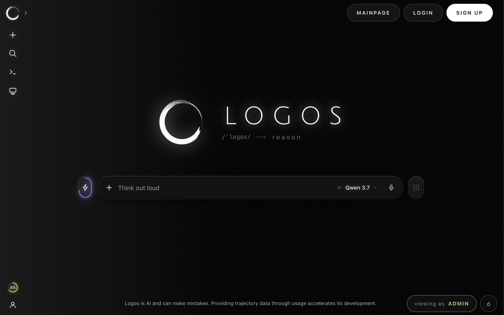
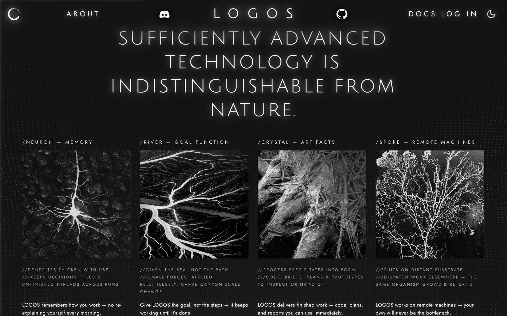
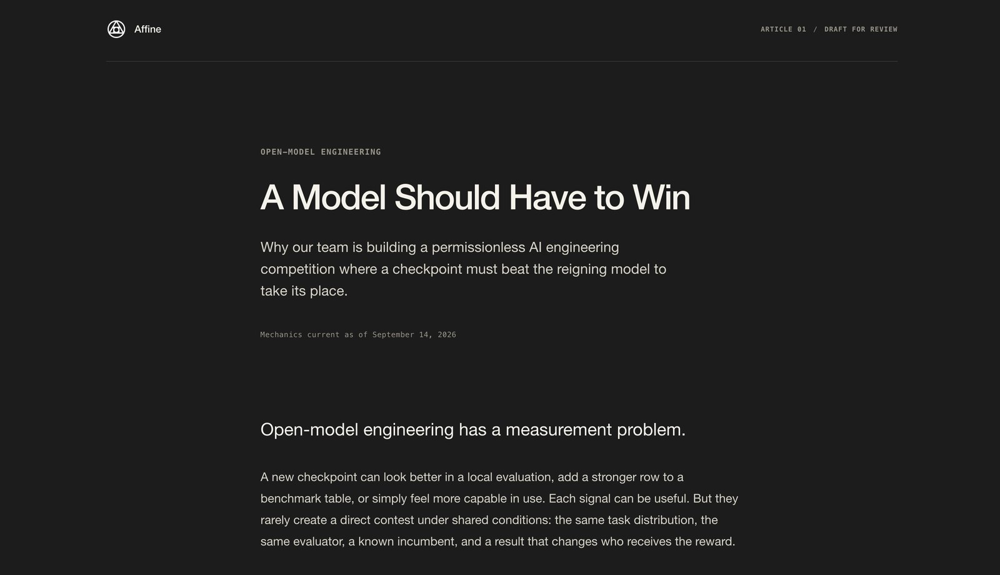

Pushing Affine: Brand, Product & Awareness
00/ Origins
Initially we simply were Affine community members who looked for a space to chat in regarding the subnet, noticed there were none, and made the Affinites Telegram. This was around when Scout made his first Affine related video, just for fun. This led to Cister having a request for another video project soon and us both getting into contact with Terence / Jiyu, with whom we had hella chats about Affine's potential to change the frontier landscape and the necessity of having intelligence in an open & commoditized form. We just were kinda in awe once we realized what Affine was all about and its envisioned role in the ecosystem (ideally). Around that time Cister got reassigned to Ninja and we were back to theorizing about Affine's potential and noticed that the X would deserve some more attention, content and design wise. We had so much fun discussing potential post concepts and overall branding around Affine in general. We also started sending out suggestions to Tobias directly in an effort to somehow contribute, and made another video on the side to spread Affine in an epic kind of way.
We got introduced via Terence / Cycadmemoires / Jiyuu as we were all Affine maxis and heard that the China team would appreciate some help with marketing, branding and/or design. It felt like a perfect fit and we just went to work, re-concepting a brand language for Affine, but more importantly getting familiar with what LOGOS was all about and how we needed a full branding structure around it. So the initial idea to help with tweets soon turned into full branding, community management on the new LOGOS Discord and even a large amount of product management, with us becoming in charge of LOGOS' actual product and use cases: how the UX went down, navigation, interface and functionality.
Back then the team experienced a lot of internal restructuring. Nick was in the process of building out a workflow where he could constantly give us a stream of raw materials for us to package up and post, but we soon after learned about his self mining, which rendered the former part obsolete. We ended up having to do our own research into what kind of marketing Affine itself needed by studying the incentive mechanism and where the holes in our marketing were. When the incentive mechanism changed substantially, much of the marketing direction we had been developing around the previous mechanism had to be kicked down the road. We pulled back, studied the new Reason/distillation competition in depth, and rebuilt the positioning around what we believed would help Affine under the new mechanism. Despite how much of a whirlwind it was, it was extremely enjoyable to the both of us. It felt like we had found our calling, pushing Affine where we could, and it felt extremely incentive aligning. Lots of 3am nights just brainstorming things.
01/ Design Language
Initially, we were tasked by Nick to make some consistent design language files for marketing. This is an initial version, containing the design language, philosophy/rationale, website/dashboard concepts and logos.
The Nick situation sadly disrupted that part, but it gave us a good direction we continued to implement into LOGOS workflow wise. We'd carefully claim that we have progressed quite a bit since then in terms of the feel for design, what works and what doesn't. As there were quite a bit of chaotic moments within the team structure we sometimes were a bit bound by the environment in terms of having clear direction. We did grow from it tho so there certainly was a learning experience to it.


Alternative logos



02/ LOGOS Product Design & Design-to-Engineering Workflow
In terms of LOGOS, which was the user facing harness, this was where a large amount of hours of work went into. When we joined the team, LOGOS, at the time called Affent, was very raw. We essentially designed and conceptualised LOGOS, and its underlying design language, from the ground up. We had many discussions regarding the product, positioning, moat and features. We gladly ended up being delegated most of the appearance / UX / design / concept / product management of LOGOS while Tobias could work on the harness itself.
As the product developed, we found that the normal design-to-implementation loop wasn't reliably preserving the intended experience. Designs would often diverge during implementation, feedback loops with the team were slow, and there wasn't a consistent way for us to verify that what shipped matched what had been designed.
Rather than continuing to rely on static handoffs, we learned the GitHub workflow and built our own design-to-engineering pipeline. This gave us much more ownership over the fidelity of the product.


03/ Videos
Videos in themselves were also a learning curve, from a bit messy and raw fun-projects to ones with a real lean goal in mind like the most recent one (05), fully intended on spreading awareness to “Trad AI ML talent”. There's many new angles that came with the most recent Video to make the Affine mining opportunity more digestible and understood.
View in here or for full quality within video folder in zip.
04/ Medium & Side Quests
We also enjoy taking on any “uncategorized” work. Be it forwarding opportunities like KAGGLE or simply doing a dinner guestlist, being in contact with in-eco teams like Etienne & Victor regarding the exploit or running community management like on the now deprecated LOGOS Discord or potentially Affine related Reddit / Discord communities in the future. We intended to also begin marketing on Medium, and get our voice heard by serious AI researchers. We have an initial unposted Medium article here:

05/ X Posts
Affine, like every other subnet, is only as good as its miners. We view the gap of awareness and understanding regarding Affine and Bittensor in general as the bottleneck.
The angle we had just started implementing was to position Affine as an intellectually interesting, live public technical competition anyone could join for big prizes, because really the model and incentive mechanism is the product, and as the quality of miners improves, so does the product. The model comes first. Miners receive over $40k USD per week for having a champion model. A cracked AI researcher from a big lab wouldn't come to mine Affine because the weekly reward is 100k instead of 40k. The gap is in awareness that this incentive is even available to them.
The X marketing angle we finally arrived at was to communicate updates to things like the incentive mechanism and transparently show the state of competitions, achievements and exploits, so that anyone at all technical would find it interesting, serious, and incentivising, even if it might resonate less with a non-technical investor.
06/ Conclusion
We love it here at Affine. It gave us a real sense of purpose and something to look forward for when waking up in the sense of having a new shot at contributing something to a larger whole. We're obviously not perfect, but try our best to adapt and adjust to whatever we're given. Be it feedback and or the need to become better and more aligned with each and every day. We really, really, really wanna keep pushing Affine, especially with you Const and any other like minded people potentially joining in the future. We believe in the achieving of a Goodhart-resistant IM, and want to help to push awareness to the other side of what makes Affine, Affine and with that Bittensor, Bittensor :)
pushing ⴷ.
pushing τ.